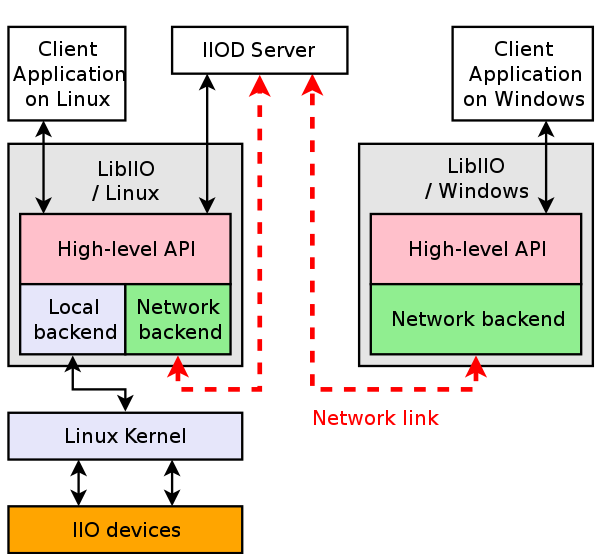

Libiio
Libiio is a library that has been developed by Analog Devices to ease the development of software interfacing Linux Industrial I/O Subsystem devices.
The library abstracts the low-level details of the hardware, and provides a simple yet complete programming interface that can be used for advanced projects.
The library is composed by one high-level API, and several backends:
the “local” backend, which interfaces the Linux kernel through the sysfs virtual filesystem,
the “network” backend, which interfaces the
iiodserver through a network link.
The IIO Daemon (IIOD) server is a good example of an application that uses libiio. It creates a libiio context that uses the “local” backend, and then share it on the network to any client application using the “network” backend of libiio and connected to the server.
{kind=link}
Documentation
An automatically generated documentation of the API can be found at ADI libiio repository
Python and C# have official bindings available in the repository but third parties have developed others for more languages.
Python and C# bindings documentation is available on the About libiio and within the API documentation.
Deprecated clients documentations can still be read at:
Network Backends
If you just want to use libiio and iiod, which may be on a pre-compiled image - there are many places you can stream data to.
Source code and releases
The libiio library source code can be obtained on ADI libiio repository.
Stable releases are available at ADI libiio repository (releases).
Continuous integrations pipelines run here, where installers for every platform can also be found, but may be unstable/buggy.
Building libiio
Building on the Linux/Zynq Target
Check out how to stay up to date. This will check out and build the latest version.
Building on the Linux Host Target
Building libiio is pretty straightforward.
The first step is to fetch the dependencies, which as of now is only libxml2.
Debian based distributions
On a Debian-flavoured GNU/Linux distribution, like Ubuntu for instance:
~$
sudo apt-get install build-essential libxml2 libzstd-dev \
libxml2-dev bison flex libcdk5-dev cmake
Depending on the backend (how you want to attach the IIO device), you may need at least one of:
~$
sudo apt-get install libaio-dev libusb-1.0-0-dev \
libserialport-dev libxml2-dev libavahi-client-dev doxygen graphviz
RedHAT based distributions
~$
sudo dnf install libxml2 libzstd-dev \
libxml2-devel bison flex make gcc cmake rpmdevtools
Depending on the backend (how you want to attach the IIO device), you may need at least one of:
~$
sudo dnf install libaio-devel libusb1-devel \
libserialport-devel avahi-devel doxygen graphviz
FreeBSD based distributions
~$
sudo pkg update && sudo pkg upgrade && sudo pkg install \
libzstd libxml2 bison flex gcc cmake git
Depending on the backend (how you want to attach the IIO device), you may need at least one of:
~$
sudo pkg install libserialport avahi doxygen graphviz
Add these lines to /etc/rc.conf:
dbus_enable="YES"
avahi_daemon_enable="YES"
avahi_dnsconfd_enable="YES"
FreeBSD does not automount USB drives by default, so you need to install an automounter:
~$
sudo pkg install automount
Remaining steps
Warning
At this time the main branch of libiio in under heavy development. It is recommended to use the latest release if not a developer. That would be a v0.XX release.
Now you have the prerequisite installed, you can clone a release branch from the GIT repository:
~$
git clone https://github.com/analogdevicesinc/libiio.git --branch v0.26
In the libiio/ directory,
~/libiio$
mkdir build && cd build
~/libiio/build$
cmake ../ && make
~/libiio/build$
sudo make install
This will build libiio in the build subdirectory, and install it to /usr. Note that it is possible to install to a different location by setting the PREFIX variable.
To build IIO oscilloscope you’ll have to make sure libiio directories can be found, one way to do this given it installed to /usr/lib is add it to your sessions PATH:
~$
PATH=/usr/lib/:$PATH
Understanding which libiio is being used
During development, sometimes it can be a puzzle which version of libiio is being used. An easy way to tell is to do something like:
~/libiio$
git describe --tags
v0.8-13-g6847e22
To check what is running:
~/libiio/build$
iio_info
Library version: 0.8 (git tag: 6847e22)
Unable to create IIO context
If you are running an application, and want to find out:
~/libiio/build$
strace -ofoo iio_info
Library version: 0.8 (git tag: 6847e22)
Unable to create IIO context
~/libiio/build$
grep -e ^open foo | grep libiio
open("./tls/x86_64/libiio.so.0", O_RDONLY|O_CLOEXEC) = -1 ENOENT (No such file or directory)
open("./tls/libiio.so.0", O_RDONLY|O_CLOEXEC) = -1 ENOENT (No such file or directory)
open("./x86_64/libiio.so.0", O_RDONLY|O_CLOEXEC) = -1 ENOENT (No such file or directory)
open("./libiio.so.0", O_RDONLY|O_CLOEXEC) = 3
~/libiio/build$
ls -l ./libiio.so.0
lrwxrwxrwx 1 analog analog 13 Nov 15 10:36 ./libiio.so.0 -> libiio.so.0.8
analog@imhotep:~/github/libiio/build$ ls -l ./libiio.so.0.8
-rwxr-xr-x 1 analog analog 408432 Nov 15 10:36 ./libiio.so.0.8
This found a version in the same directory.
~$
strace -ofoo iio_info
Library version: 0.8 (git tag: 6847e22)
Unable to create IIO context
~$
grep -e ^open foo | grep libiio
open("./tls/x86_64/libiio.so.0", O_RDONLY|O_CLOEXEC) = -1 ENOENT (No such file or directory)
open("./tls/libiio.so.0", O_RDONLY|O_CLOEXEC) = -1 ENOENT (No such file or directory)
open("./x86_64/libiio.so.0", O_RDONLY|O_CLOEXEC) = -1 ENOENT (No such file or directory)
open("./libiio.so.0", O_RDONLY|O_CLOEXEC) = -1 ENOENT (No such file or directory)
open("/usr/lib/x86_64-linux-gnu/libiio.so.0", O_RDONLY|O_CLOEXEC) = 3
~$
ls -l /usr/lib/x86_64-linux-gnu/libiio.so.0
lrwxrwxrwx 1 root root 13 Nov 9 21:05 /usr/lib/x86_64-linux-gnu/libiio.so.0 -> libiio.so.0.8
~$
ls -l /usr/lib/x86_64-linux-gnu/libiio.so.0.8
-rw-r--r-- 1 root root 408432 Nov 15 10:36 /usr/lib/x86_64-linux-gnu/libiio.so.0.8
This found the version in /usr/lib/x86_64-linux-gnu/libiio.so.0.
Cross-compilation
If you want to cross-compile libiio, you can do so by passing the corresponding
toolchain information file to cmake. Normally this is done by creating a
toolchain file, and passing this to Cmake with a
-DCMAKE_TOOLCHAIN_FILE=path/to/file option, the file will be loaded early to
set values for the compilers. This is described in the
mainline cmake doc.
Building on Windows
The instructions for building libiio with Visual Studio are available here.
Enabling IIOD USB Backend
In order to use the libIIO USB Backend - support must be built into IIOD. A simple check is shown below:
~$
iiod -F foo
ERROR: IIOD was not compiled with USB support.
In this case LibIIO / IIOD needs to be built with USBD support. (WITH_IIOD_USBD)
If all the dependencies are met, the USB Backend is built automatically. However the ‘WITH_IIOD_USBD’ option is only available under certain conditions.
In the log of cmake, if you see: Check size of struct usb_functionfs_descs_head_v2 - failed
Although your kernel itself probably is recent enough, your kernel headers are too old.
The fix:
Download the functionfs.h file.
And place it in /usr/include/linux/usb/functionsfs.h, overwriting the old one.
~$
cd /usr/include/linux/usb
/usr/include/linux/usb$
rm functionfs.h
/usr/include/linux/usb$
wget https://raw.githubusercontent.com/torvalds/linux/master/include/uapi/linux/usb/functionfs.h
Rebuild LibIIO
~$
cd /usr/local/src
/usr/local/src$
git clone https://github.com/analogdevicesinc/libiio.git
/usr/local/src$
cd /usr/local/src/libiio/
/usr/local/src/libiio$
git clean -xdf
/usr/local/src/libiio$
cmake .
/usr/local/src/libiio$
make
/usr/local/src/libiio$
sudo make install
USB Device Mode Kernel Support
In order to use the libIIO USB Backend, the target must support USB Device Mode.
Kernel compiled with USB UDC Gadget support.
CONFIG_USB_CHIPIDEA=y
CONFIG_USB_CHIPIDEA_UDC=y
CONFIG_USB_GADGET=y
CONFIG_USB_GADGET_XILINX=y
CONFIG_USB_CONFIGFS=y
CONFIG_USB_CONFIGFS_F_FS=y
Starting IIOD with USB Support
Download
Copy (and replace) iiod.conf upstart script into /etc/init
Testing
If everything works out well the USB context should be included in the available context list.
~/devel/pshare/iiod usb$
iio_info -s
Library version: 0.10 (git tag: c95ff6a)
Compiled with backends: local xml ip usb
Available contexts:
0: Local devices [local:]
1: 0456:b671 (Analog Devices Inc. Generic USB IIOD), serial=00000000 [usb:1.36.0]
libiio Examples
libiio - AD9361 IIO streaming example
Source |
Description |
|---|---|
Configures the AD9361 transceiver, receives samples, processes them and sends them back out. |